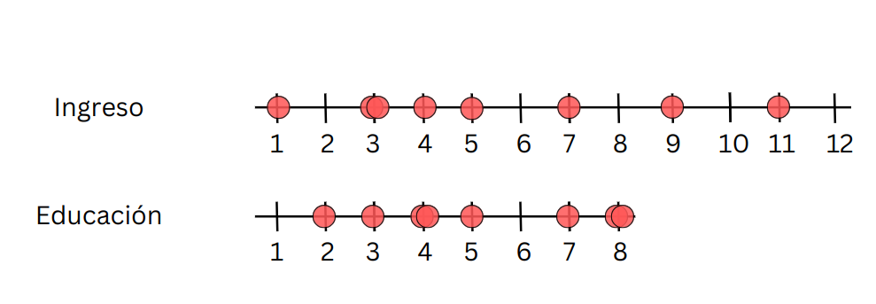
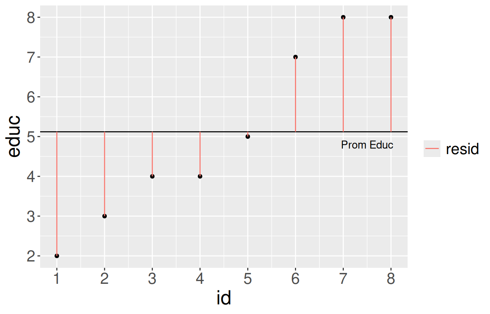
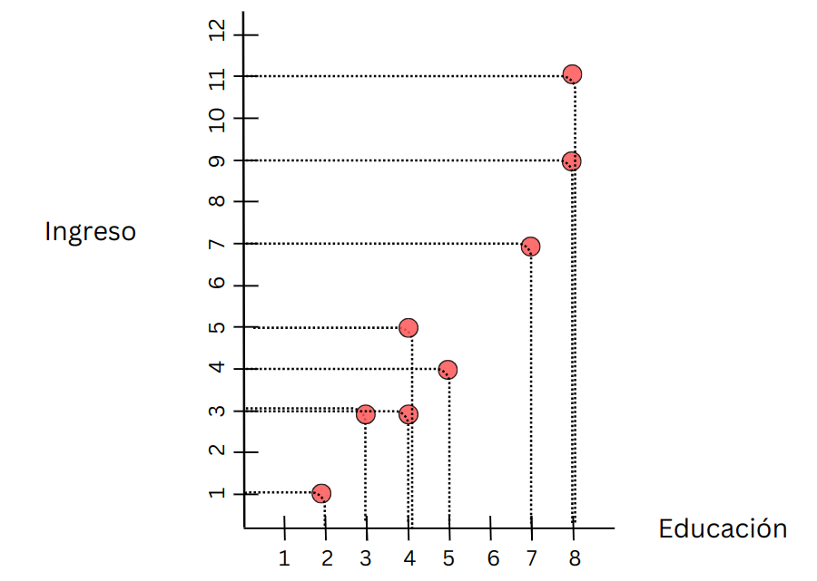
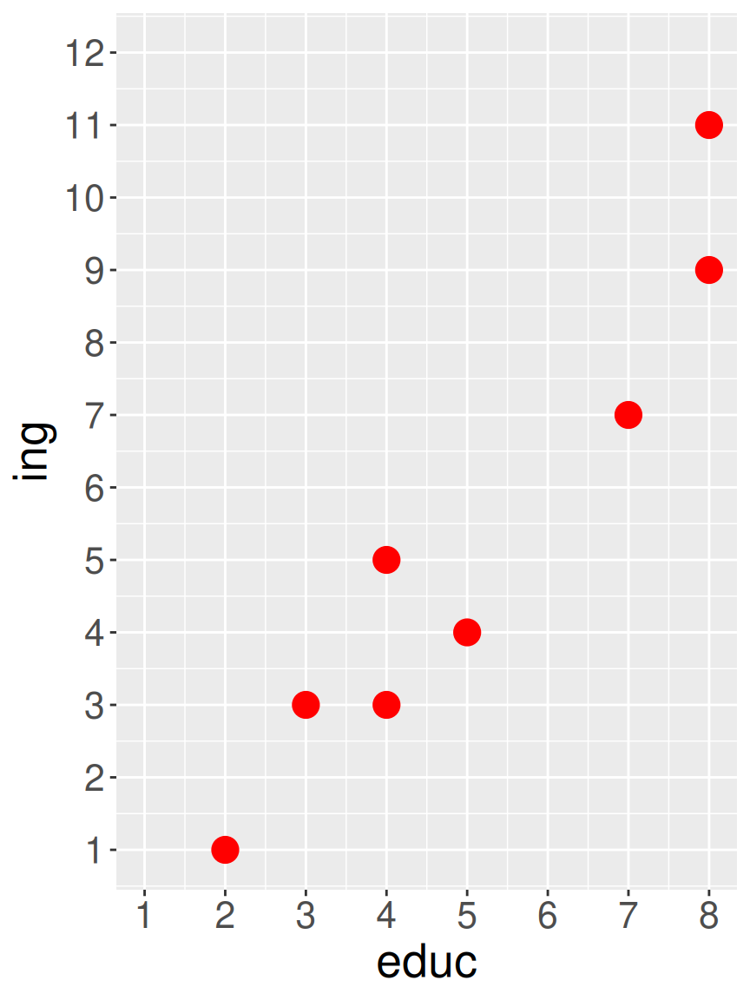
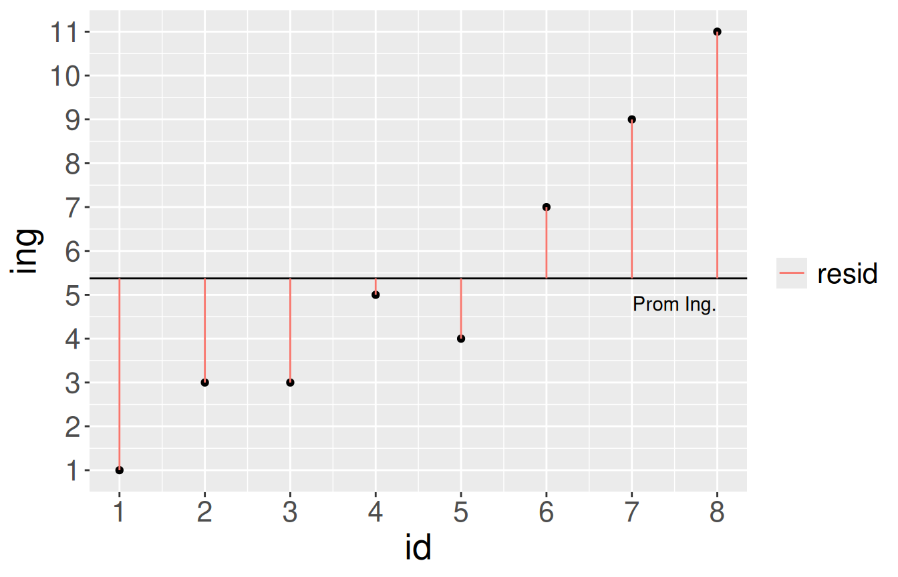
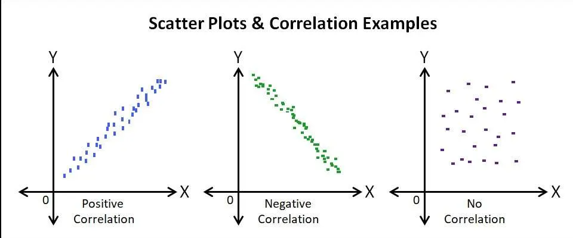
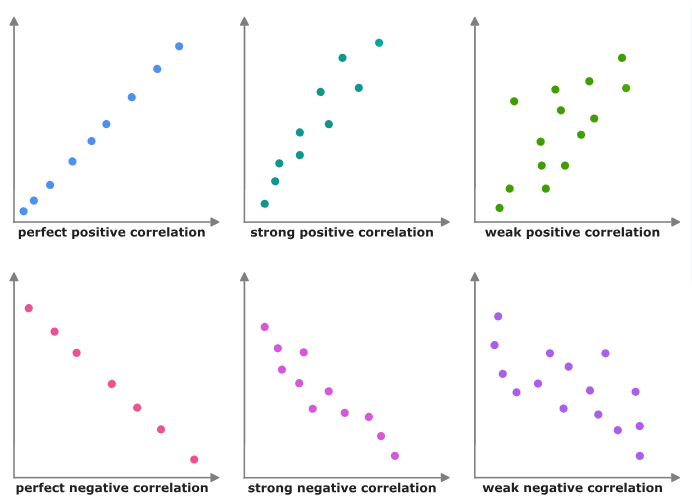
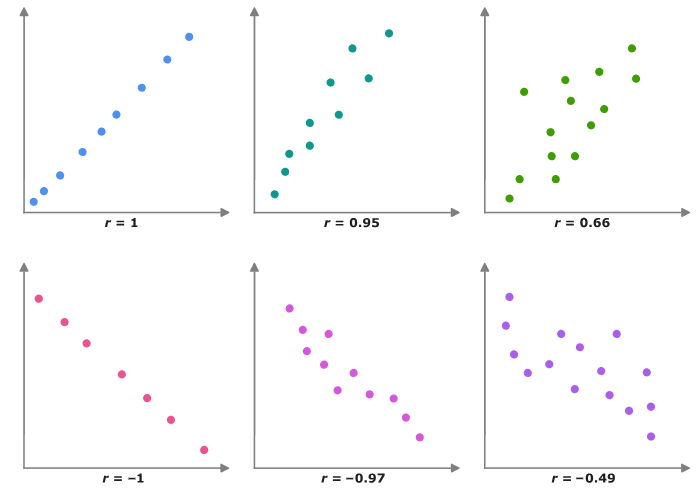
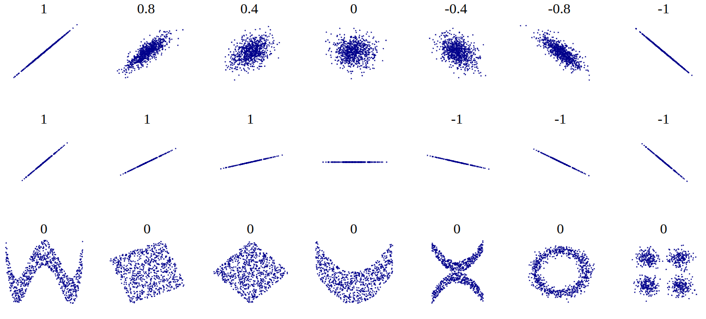
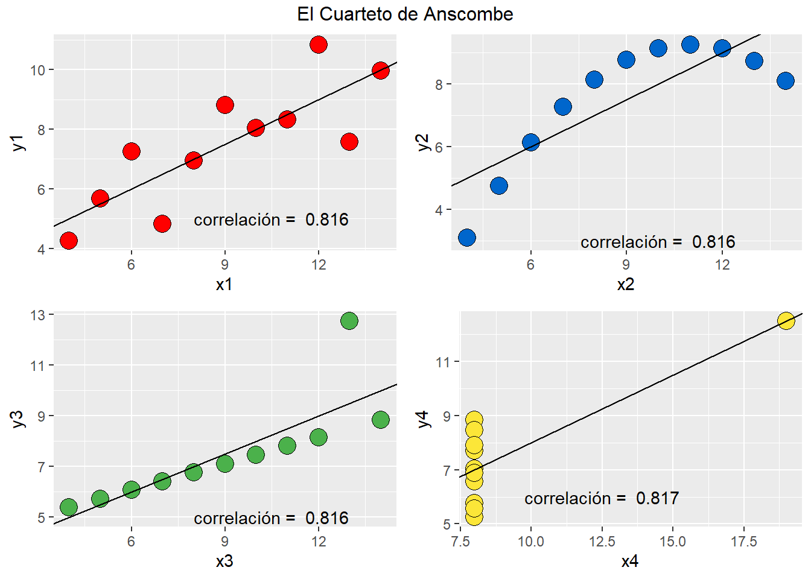

educ <- c(2,3,4,4,5,7,8,8)
ing <- c(1,3,3,5,4,7,9,11)
data <- data.frame(educ, ing)Hasta ahora (Unidad 1)
- Probabilidad, teorema central del límite, error estándar, hipótesis, diferencias entre grupos
Ahora (Unidad 2)
- Asociación: ¿en qué medida dos fenómenos (sociales) se encuentran vinculados?
Ejemplo: origen escolar y puntaje PAES
Porcentaje de estudiantes que obtiene puntajes en el 20% superior a nivel nacional, según tipo de colegio:
| Tipo de colegio | % en el 20% superior |
|---|---|
| Particular pagado | 61,3% |
| Particular subvencionado | 16,8% |
| Público | 9,5% |
Fuente: CIPER, “PAES: una radiografía de la educación y el país”
Objetivos de la sesión de hoy
Comprender los conceptos de covarianza y correlación
Aprender el cálculo de ambos coeficientes y su interpretación
Entender las limitaciones del coeficiente de corelación y su consideración en el cálculo e interpretación
Lectura: Moore 97-131 Análisis de relaciones
1. Varianza y nube de puntos
Ejemplo minimalista: educación e ingreso
simulamos datos para
8 casos
8 niveles de educación (ej: desde básica incompleta=1 hasta postgrado=8)
12 niveles de rangos de ingreso (ej: desde menos de 100.000=1 hasta más de 10.000.000=12)
Generación de datos ejemplo
kableExtra::kbl(data)| educ | ing |
|---|---|
| 2 | 1 |
| 3 | 3 |
| 4 | 3 |
| 4 | 5 |
| 5 | 4 |
| 7 | 7 |
| 8 | 9 |
| 8 | 11 |

Midiendo dispersión:
\[Varianza=\sigma^{2}={\sum_{i=1}^{N}(x_{i}-\bar{x})^{2}\over {N - 1}}\]
\[\sigma^{2}={\sum_{i=1}^{N}(x_{i}-\bar{x})^{2}\over {N - 1}}\]

\[\sigma^{2}={\sum_{i=1}^{N}(x_{i}-\bar{x})^{2}\over {N - 1}}\]


Varianza educación
\[Varianza=\sigma^{2}={\sum_{i=1}^{N}(x_{i}-\bar{x})^{2}\over {N - 1}}\]
mean(data$educ)[1] 5.125data$mean_educ <- mean(data$educ)
data$dif_m_educ <- data$educ-data$mean_educ
data$dif_m_educ2 <- (data$dif_m_educ)^2kbl(data, digits = 2) %>%
scroll_box(width = "500px", height = "500px")| id | educ | ing | mean_educ | dif_m_educ | dif_m_educ2 |
|---|---|---|---|---|---|
| 1 | 2 | 1 | 5.12 | -3.12 | 9.77 |
| 2 | 3 | 3 | 5.12 | -2.12 | 4.52 |
| 3 | 4 | 3 | 5.12 | -1.12 | 1.27 |
| 4 | 4 | 5 | 5.12 | -1.12 | 1.27 |
| 5 | 5 | 4 | 5.12 | -0.12 | 0.02 |
| 6 | 7 | 7 | 5.12 | 1.88 | 3.52 |
| 7 | 8 | 9 | 5.12 | 2.88 | 8.27 |
| 8 | 8 | 11 | 5.12 | 2.88 | 8.27 |
| id | educ | ing | mean_educ | dif_m_educ | dif_m_educ2 |
|---|---|---|---|---|---|
| 1 | 2 | 1 | 5.12 | -3.12 | 9.77 |
| 2 | 3 | 3 | 5.12 | -2.12 | 4.52 |
| 3 | 4 | 3 | 5.12 | -1.12 | 1.27 |
| 4 | 4 | 5 | 5.12 | -1.12 | 1.27 |
| 5 | 5 | 4 | 5.12 | -0.12 | 0.02 |
| 6 | 7 | 7 | 5.12 | 1.88 | 3.52 |
| 7 | 8 | 9 | 5.12 | 2.88 | 8.27 |
| 8 | 8 | 11 | 5.12 | 2.88 | 8.27 |
sum(data$dif_m_educ2)[1] 36.875Varianza educación
\[ \begin{align*} Varianza =\sigma^{2} &={\sum_{i=1}^{N}(x_{i}-\bar{x})^{2}\over {N - 1}}\\ \sigma^{2} &={(36,875)\over {8 - 1}}\\ \sigma^{2} &= 5,267\\ \end{align*} \]
var(data$educ)[1] 5.267857Varianza ingreso
Promedio ingreso:
mean(data$ing)[1] 5.375
SS ingreso \((x_{i}-\bar{x})^{2}\):
data$mean_ing <- mean(data$ing)
data$dif_m_ing <- data$ing-data$mean_ing
data$dif_m_ing2 <- (data$dif_m_ing)^2
sum(data$dif_m_ing2)[1] 79.875\[ \begin{align*} Varianza =\sigma^{2} &={\sum_{i=1}^{N}(x_{i}-\bar{x})^{2}\over {N - 1}}\\ \sigma^{2} &={(79,875)\over {8 - 1}}\\ \sigma^{2} &= 11.41071\\ \end{align*} \]
var(data$ing)[1] 11.41071¿Por qué es importante la varianza?
Indica la dispersión (variabilidad) de los datos en torno al promedio
Permite cuantificar relaciones entre variables: covarianza
Asociación
| id | educ | ing |
|---|---|---|
| 1 | 2 | 1 |
| 2 | 3 | 3 |
| 3 | 4 | 3 |
| 4 | 4 | 5 |
| 5 | 5 | 4 |
| 6 | 7 | 7 |
| 7 | 8 | 9 |
| 8 | 8 | 11 |
Graficando cada caso:

En R
plot1 <- ggplot(data,
aes(x=educ, y=ing)) +
geom_point(
colour = "red",
size = 5) +
scale_x_continuous(breaks = 1:8, limits = c(1, 8)) +
scale_y_continuous(breaks = 1:12, limits = c(1, 12)) +
theme(text =
element_text(size = 20))Nube de puntos:

La nube de puntos o scatterplot es una representación gráfica de la asociación de dos variables, donde cada punto representa el valor de cada caso en cada una de las variables

¿Cómo expresar matemáticamente este patrón de asociación?
2. Covarianza
Hacia la covarianza

Educación

Ingreso
Covarianza
Varianza educación (x)
\[\sigma_{edu}^{2}={\sum_{i=1}^{N}(x_{i}-\bar{x})^{2}\over {N - 1}}\] \[\sigma_{edu}^{2}={\sum_{i=1}^{N}(x_{i}-\bar{x})(x_{i}-\bar{x})\over {N - 1}}\]
Varianza ingreso (y)
\[\sigma_{ing}^{2}={\sum_{i=1}^{N}(y_{i}-\bar{y})^{2}\over {N - 1}}\] \[\sigma_{ing}^{2}={\sum_{i=1}^{N}(y_{i}-\bar{y})(y_{i}-\bar{y})\over {N - 1}}\]
\[Covarianza=cov(x,y) = \frac{\sum_{i=1}^{N}(x_i - \bar{x})(y_i - \bar{y})} {N-1}\]
Cálculo covarianza
data$dif_xy <-
data$dif_m_educ*
data$dif_m_ingdata %>% select(educ,ing,
dif_m_educ,
dif_m_ing,
dif_xy) %>% kbl| educ | ing | dif_m_educ | dif_m_ing | dif_xy |
|---|---|---|---|---|
| 2 | 1 | -3.125 | -4.375 | 13.671875 |
| 3 | 3 | -2.125 | -2.375 | 5.046875 |
| 4 | 3 | -1.125 | -2.375 | 2.671875 |
| 4 | 5 | -1.125 | -0.375 | 0.421875 |
| 5 | 4 | -0.125 | -1.375 | 0.171875 |
| 7 | 7 | 1.875 | 1.625 | 3.046875 |
| 8 | 9 | 2.875 | 3.625 | 10.421875 |
| 8 | 11 | 2.875 | 5.625 | 16.171875 |
sum(data$dif_xy)[1] 51.625Covarianza
\[ \begin{align*} Covarianza=cov(x,y) &= \frac{\sum_{i=1}^{n}(x_i - \bar{x})(y_i - \bar{y})} {N-1} \\ &= \frac{51.625} {8-1} \\ &=7.375 \end{align*} \]
cov(data$educ,data$ing)[1] 7.375La covarianza es una medida de asociación entre variables basada en la variabilidad de cada una de ellas
La distancia del promedio del valor de una variable (residuo): ¿tiene relación con el residuo de otra variable?
Expresa la medida en que los valores de cada variable se distancian respectivamente de su promedio
Su valor no es interpretable directamente
3. Correlación de Pearson
Correlación producto-momento de Pearson

Medida estandarizada de covarianza
Basada en los trabajos de Galton y de Bravais
Desarrollada por Karl Pearson (1857-1936): físico, matemático, estadístico y germanista. Y eugenista …
Correlación producto-momento (Pearson): r
\[ \begin{align*} Covarianza = cov(x,y) &= \frac{\sum_{i=1}^{n}(x_i - \bar{x})(y_i - \bar{y})} {n-1}\\ \\ Correlación=r &= \frac{\sum_{i=1}^{n}(x_i - \bar{x})(y_i - \bar{y})} {(n-1)\sigma_x \sigma_y }\\ \\ &= \frac{\sum(x-\bar{x})(y-\bar{y})}{\sqrt{\sum(x-\bar{x})^{2} \sum(y-\bar{y})^{2}}} \end{align*} \]
Cálculo correlación r de Pearson
| educ | ing | dif_m_educ2 | dif_m_ing2 | dif_xy |
|---|---|---|---|---|
| 2 | 1 | 9.77 | 19.14 | 13.67 |
| 3 | 3 | 4.52 | 5.64 | 5.05 |
| 4 | 3 | 1.27 | 5.64 | 2.67 |
| 4 | 5 | 1.27 | 0.14 | 0.42 |
| 5 | 4 | 0.02 | 1.89 | 0.17 |
| 7 | 7 | 3.52 | 2.64 | 3.05 |
| 8 | 9 | 8.27 | 13.14 | 10.42 |
| 8 | 11 | 8.27 | 31.64 | 16.17 |
\[r=\frac{\sum(x-\bar{x})(y-\bar{y})}{\sqrt{\sum(x-\bar{x})^{2} \sum(y-\bar{y})^{2}}}\]
sum(data$dif_xy); sum(data$dif_m_educ2);sum(data$dif_m_ing2)[1] 51.625[1] 36.875[1] 79.875Cálculo correlación
\[ \begin{align*} r &= \frac{\sum(x-\bar{x})(y-\bar{y})}{\sqrt{\sum(x-\bar{x})^{2} \sum(y-\bar{y})^{2}}} \\ \\ &= \frac{51.625}{ \sqrt{36.875*79.875}} \\ \\ &= \frac{51.625}{54.271} \\ \\ &= 0.951 \end{align*} \]
cor(data$educ,data$ing)[1] 0.9512367Interpretación
El coeficiente de correlación (de Pearson) es una medida de asociación lineal entre variables, que indica el sentido y la fuerza de la asociación
Varía entre +1 y -1, donde
valores positivos indican relación directa (aumenta una, aumenta la otra)
valores negativos indican relación inversa (aumenta una, disminuye la otra)
Nubes de puntos (scatterplot)

Nubes de puntos (scatterplot)

Nubes de puntos (scatterplot)

Adivine la correlación:
guessthecorrelation.com
Nubes de puntos (scatterplot)

4. Limitaciones
Limitaciones correlación
medida de asociación lineal entre variables
no captura apropiadamente asociaciones no lineales
posee supuestos distribucionales de x e y (distribución normal)
sensible a valores extremos
un mismo coeficiente puede reflejar distintas distribuciones bivariadas

Resumen
Asociación, explicación y ciencias sociales
Varianza y covarianza
Pearson: asociación en un número en rango fijo